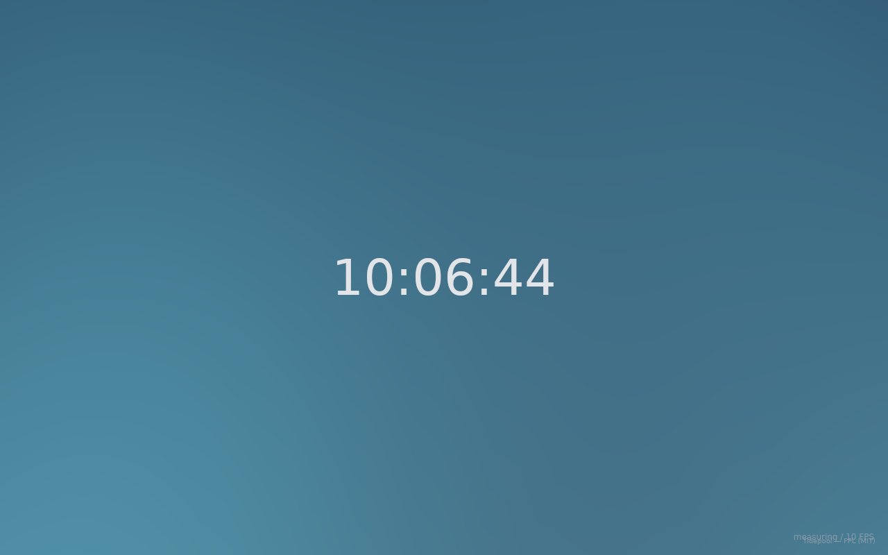

Linux for connected machines.
fungOS brings Mycelium’s discovery, network topology, secure enrollment and software updates into a small Linux system.
Boot a machine, join your fleet, and see what’s connected.
Preview: amd64 and arm64 root filesystems are built. QEMU boot and signed application updates are verified. Public images are not available yet.
Discover. Map. Enroll. Update.
- Discovery
- Find machines, services, network equipment and attached resources.
- Topology
- See sites, subnets, links and how devices connect.
- Enrollment
- Provisioned machines join on first boot using short-lived Mycelium claims.
- Access
- Manage peer identity, roles and SSH access.
- Updates
- Distribute signed software, check activation health and recover from failed updates.
Mycelium also runs independently on existing machines. You don’t need to reinstall a device to bring it into your fleet.
System profiles
A shared Debian base, with applications selected for the job.
| Profile | Includes | Status |
|---|---|---|
| Base | Linux, SSH and Mycelium integration | Rootfs built and inspected |
| Edge | Unibus and Canvas / Wayland | Running in QEMU |
| Headless edge | Unibus runtime, no display session | Pi 3B+ image inspected |
| Compute | UMIE, Yggdrasil or Shroud | GPU handoff verified |
| Cloud | Shroud workload runtime | Nested Firecracker boot verified |
Rootfs targets: amd64 and arm64. Raspberry Pi 3B+ hardware boot is pending. A DigitalOcean image is not available yet.
Root filesystems carry runtime dependencies; first-party applications are installed separately as signed packages.
Documentation
Downloads
No public image release yet. Current builds are listed below; these are not download links.
- Pi 3B+ · arm64 · headless edge
Owner-personalized image. Filesystem checks passed; hardware boot pending. - Base / edge · amd64 and arm64
Rootfs tarballs built and inspected. Not standalone boot images. - Cloud · amd64
Rootfs verified with nested Firecracker in QEMU. Not a provider image.
Hardware validation, a security refresh and unpersonalized release images are still required before public downloads.
Recorded build checksums
Pi 3B+ image:7de69417da720730fd2dc094486ebaea1f4f5622dc10074854e7a85ebba1cb71
Cloud rootfs:2f5abd39627033adf3c1c98947f3f0892f8338ea424f5350d697d7cb601f9975
Base and edge checksums remain build-local.
Running fungOS

Mycelium, Unibus and Canvas returned after reboot. Signed application activation and rollback were verified.
The compositor remains manually updated until its display health check is ready.
About the project
fungOS is developed by Future Present Labs for homelabs, on-premises fleets, studios and compute nodes.
Mycelium manages machines. Unibus connects applications and media endpoints. Canvas provides the interface. Shroud runs workloads. Each can be used on its own.
- Open source — first-party foundations target MIT / Apache-2.0.
- Right to repair — modular drivers for mixed hardware.
- Privacy — local operation and least-privilege access.
- Interoperability — existing tools and native transports.
Upstream packages keep their own licenses. Standard and opt-in AGPL application selections are planned.
Security
Discovery does not grant access. People and machines have separate identities; roles control permitted actions. Images do not clone peer credentials.
No current image is certified for regulated or classified use. Security profiles and current limits.